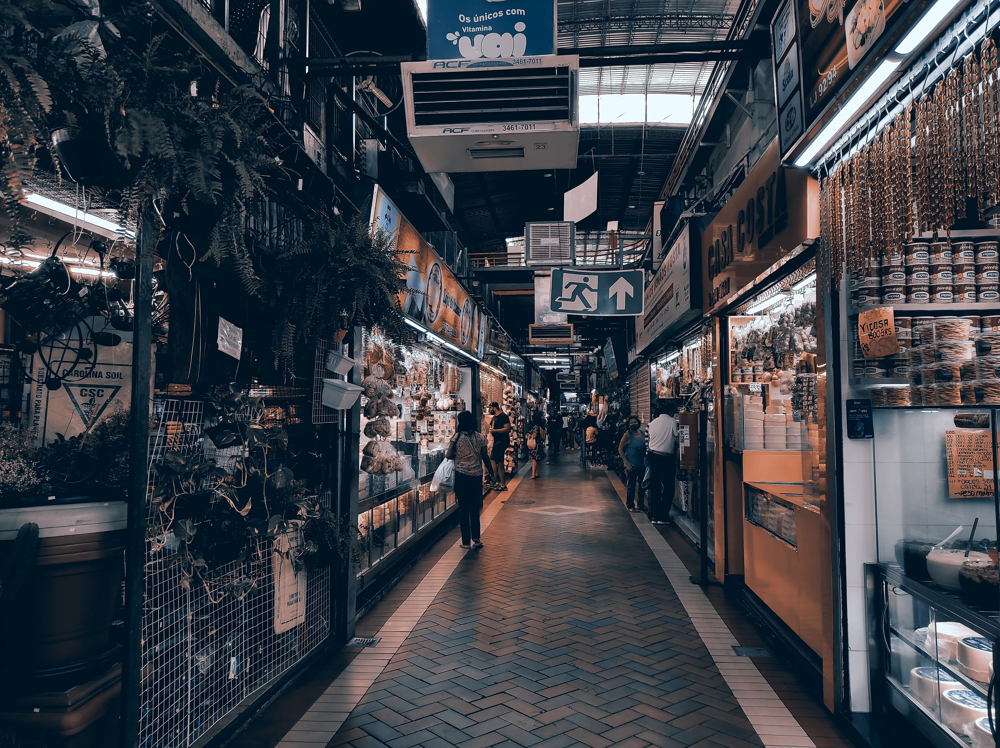

Minas Gerais
Em Minas Gerais, além de ótimas cachoeiras temos tambem o
Mercado Central.

Rio de Janeiro
No Rio de Janeiro, temos ótimas praias, além de pontos
turisticos como o Cristo.

Santa Catarina
Em Santa Catarina temos otimas praias, e em Balneario uma roda
gigante para os amantes de aventura

Bahia
Bahia é um luga maravilhoso, temos otimas praias e uma culinaria bem exotica, Salvador é uma otima opção

Pernambuco
Pra quem gosta do Nordeste, temos como opção Pernambuco, Porto de Galinhas é otimo
Goias
Não gosta de praia e quer relaxar,Goias mais especifico Caldas Novas, Hot Park é um otimo lugar com aguas quentes.